![VIT logo]()
DIGITAL IMAGE PROCESSING LABORATORY
| Semester | B.E. Semester VII |
| Subject | Digital Image Processing |
| Subject Professor In-charge | Prof. Rajashree Soman |
| Laboratory | L05 |
| Student Name | Amey Pawar | Division | B |
| Roll Number | 23108B0057 | Batch | 2 |
| Grade and Subject Teacher's Signature | |||
| Experiment Number | 8 |
| Experiment Title | Binary Morphological Processing – Erosion and Dilation |
| Aim |
To convert the segmented eye image of the previous week into a binary image at more than one
threshold; to apply binary erosion and binary dilation with three structuring
elements (3x3 square, 3x3 cross, 5x5 square) and study their effect on object size,
boundaries, small noise, thin structures, gaps, broken objects and neighbouring objects; to
compare the two operations; and to study how repeated application (1, 2 and 3 iterations)
shrinks or grows and eventually removes or merges structures. Every effect is measured
(foreground pixel count, area fraction, connected components, boundary length, the iteration
at which regions vanish or merge) rather than described visually only, and the
erosion/dilation duality is verified numerically.
Lineage. The input of this experiment is “the final segmented image obtained in the previous week’s activity”, i.e. the Task 7 region-growing output: acquisition → histogram equalization (Task 3) → seeded region growing ( src/region_growing.py, automatic darkest-point seed, running-mean criterion,
T = 45, 8-connectivity – the “High” tolerance of Task 7) →
binary morphology (this report). T = 45 is deliberately the loosest Task 7
setting: it also captures the eyebrow and speckle around the iris, which gives the
morphological operators real structure (thin bridges, tiny fragments, gaps) to act on; a
clean single blob would make erosion/dilation trivial to describe.
|
| Theory |
Binary image and structuring elementA binary image is a set A ⊂ ℤ² of foreground pixel coordinates (here the dark pupil/iris/eyebrow pixels; background is the complement Ac). A structuring element (SE) B is a small set of offsets with a designated origin. Bz denotes B translated so its origin sits at pixel z, and the reflection is B̂ = {−b : b ∈ B}. Erosion (fit)A ⊖ B = { z : Bz ⊂ A } = ⋂b∈B A−b A pixel z survives only if the SE centred at z fits entirely inside the object. Erosion shrinks objects, strips a layer of boundary pixels, deletes objects and protrusions narrower than the SE, and widens gaps between objects; it can also split an object joined by a thin neck. Dilation (hit)A ⊕ B = { z : B̂z ∩ A ≠ ∅ } = ⋃b∈B A+b A pixel z is set if the (reflected) SE centred at z hits (overlaps) at least one object pixel. Dilation grows objects, thickens boundaries, closes narrow gaps and holes, joins broken pieces and merges nearby objects. Figure 2 shows both rules on a small shape. Duality(A ⊖ B)c = Ac ⊕ B̂ ⇔ A ⊖ B = (Ac ⊕ B̂)c Eroding the foreground is the same as dilating the background with the reflected SE, and taking the complement. All three SEs here are symmetric so B̂ = B, but the code reflects anyway. The identity is verified pixel-for-pixel in Output (Table 10, Figure 17). Structuring-element geometrySE size and shape set how much and in which directions an object changes (Figure 1). The 3x3 square (9 pixels) is 8-connected: it changes an object by one pixel in all eight directions, so diagonal edges move faster (by √2) than axis-aligned ones. The 3x3 cross (5 pixels: centre + 4 neighbours) is 4-connected: it moves edges by one pixel orthogonally but only ~0.7 pixel along diagonals, so it is gentler and rounds corners into diamonds. The 5x5 square (25 pixels) is the Minkowski sum of two 3x3 squares, B5 = B3 ⊕ B3, so one 5x5 pass equals two 3x3 passes (confirmed pixel-identically for both operations on all 3 images). Iterating with the same SE n times equals one operation with the n-fold Minkowski sum: a growing square (or diamond for the cross). Related composite operations (from
|
| Resources / Apparatus Required |
Software: Python 3.11 • OpenCV • NumPy • Matplotlib • scikit-image •
Pillow • Jupyter Notebook / VS Code. Modules reused: src/morphology.py,
src/segment.py, src/region_growing.py (Task 7),
src/enhancement.py (Task 3). New: src/binary_morphology.py.
|
| Algorithm |
A. Binary Conversion
B. Erosion
C. Dilation
D. Iteration Study and Duality
|
| Program code |
Trimmed to the essentials. Full module: def to_binary(img, threshold, dark_foreground=True):
if img.ndim == 3: img = cv2.cvtColor(img, cv2.COLOR_BGR2GRAY)
m = (img < threshold) if dark_foreground else (img >= threshold)
return m.astype(np.uint8) * 255
def make_se(shape, size): # 'square' or 'cross'
return morph.structuring_element("rect" if shape == "square" else shape, size)
def erode(mask, se, iterations=1): return cv2.erode(mask, se, iterations=iterations)
def dilate(mask, se, iterations=1): return cv2.dilate(mask, se, iterations=iterations)
def erode_ref(mask, se, iterations=1): # A (-) B = AND of shifted copies
a = mask > 0; ph, pw = se.shape[0]//2, se.shape[1]//2
for _ in range(iterations):
p = np.pad(a, ((ph, ph), (pw, pw)), constant_values=True)
out = np.ones_like(a)
for i, j in zip(*np.nonzero(se)):
out &= p[i:i+a.shape[0], j:j+a.shape[1]]
a = out
return a.astype(np.uint8) * 255 # dilate_ref: OR of shifts, pad False
def n_components(mask): return cv2.connectedComponents((mask > 0).astype(np.uint8), connectivity=8)[0] - 1
def boundary_length(mask): # fg pixels with a 4-neighbour background
inner = cv2.erode(mask, cross3, borderType=cv2.BORDER_CONSTANT, borderValue=0)
return int(((mask > 0) & (inner == 0)).sum())
def iterations_to_vanish(mask, se, max_iter=150):
cur = mask
for k in range(1, max_iter + 1):
cur = cv2.erode(cur, se)
if not cur.any(): return k
def merge_iterations(mask, se, max_iter=40): # first drop in component count / single component
n0 = n_components(mask); first = one = None; cur = mask
for k in range(1, max_iter + 1):
cur = cv2.dilate(cur, se); n = n_components(cur)
if first is None and n < n0: first = k
if n <= 1: one = k; break
return {"n0": n0, "first_merge_iter": first, "single_iter": one}
def duality_check(mask, se, iterations=1):
comp, se_r = 255 - mask, se[::-1, ::-1].copy()
return int((erode(mask, se, iterations) != 255 - dilate(comp, se_r, iterations)).sum())
|
| Output |
Test images and source segmentation (Task 7 lineage)
The native images are 128x128, 130x130 and 144x144 and are upscaled 2x (nearest-neighbour) exactly as in Tasks 3–7. The source files are single-channel near-infrared images, so the grayscale-conversion step is a no-op: the “grayscale” panel in Figures 3–5 is numerically identical to the original and is shown only to document the step, not because a colour conversion took place. Diagrams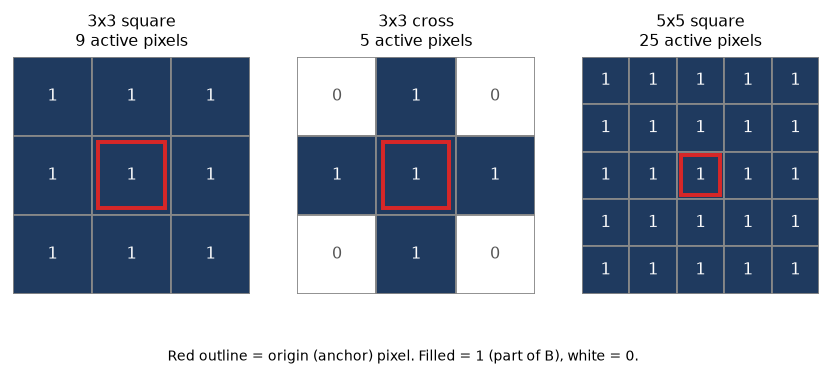 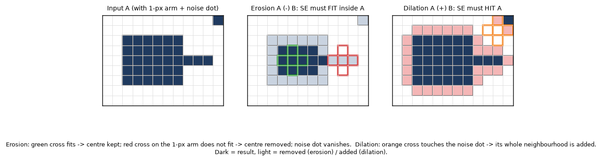 Task 1 – Binary conversion at three thresholds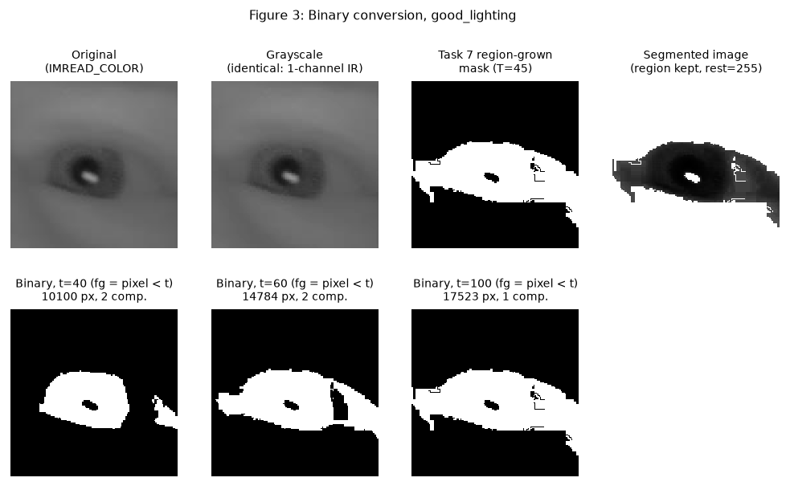 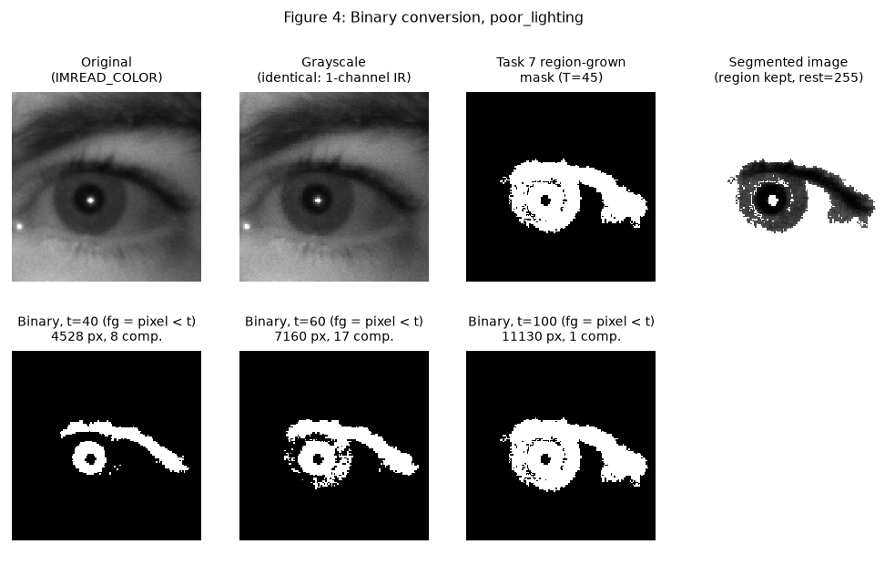 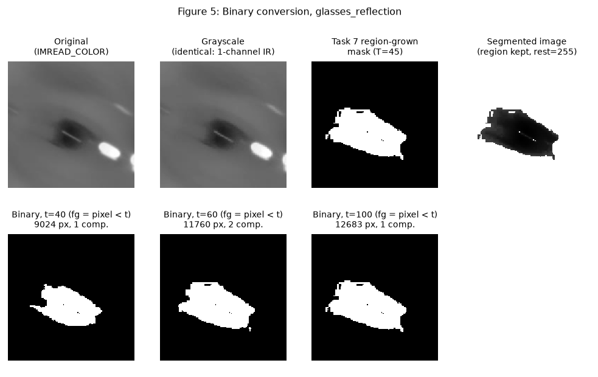 Foreground = pixels of the segmented image S darker than t. Because S already contains only region-grown pixels (values up to about 100 after equalization; background 255), raising t admits progressively brighter boundary pixels of the region:
Table 1. Effect of the binarization threshold. Low t keeps only the darkest pupil core (few, separate objects); t = 60 additionally keeps the iris/eyebrow texture as many small fragments (17 components on poor_lighting, 14 of them ≤30 px); t = 100 recovers essentially the whole region-grown mask, which fuses into a single component on all three images. The Otsu threshold of S (80 / 88 / 62) lies between t = 60 and t = 100. t = 60 is used for all morphology experiments because it contains both large objects and genuine small noise/thin structures, which is what erosion and dilation must be judged on. Working binary images (t = 60):
Task 2 – Erosion (3 structuring elements, 1–3 iterations)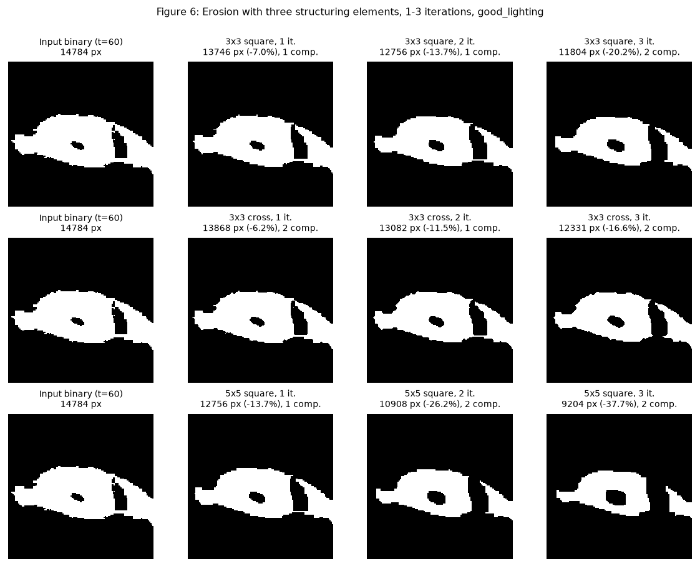 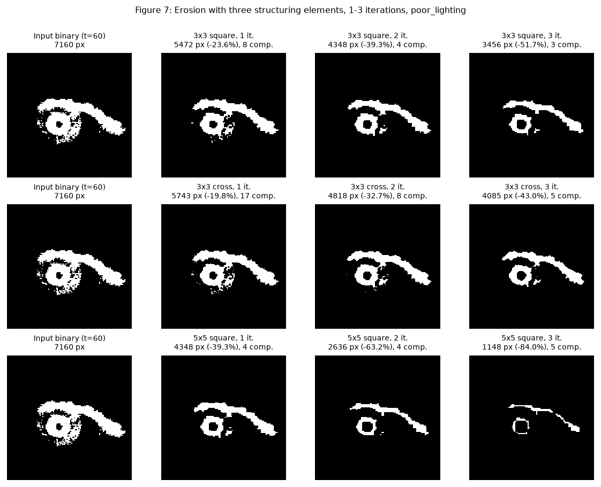 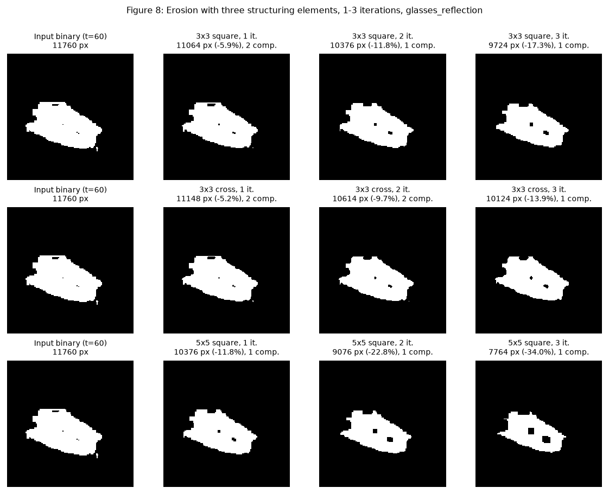 Table 2 – erosion, good_lighting
Table 3 – erosion, poor_lighting
Table 4 – erosion, glasses_reflection
Task 3 – Dilation (3 structuring elements, 1–3 iterations)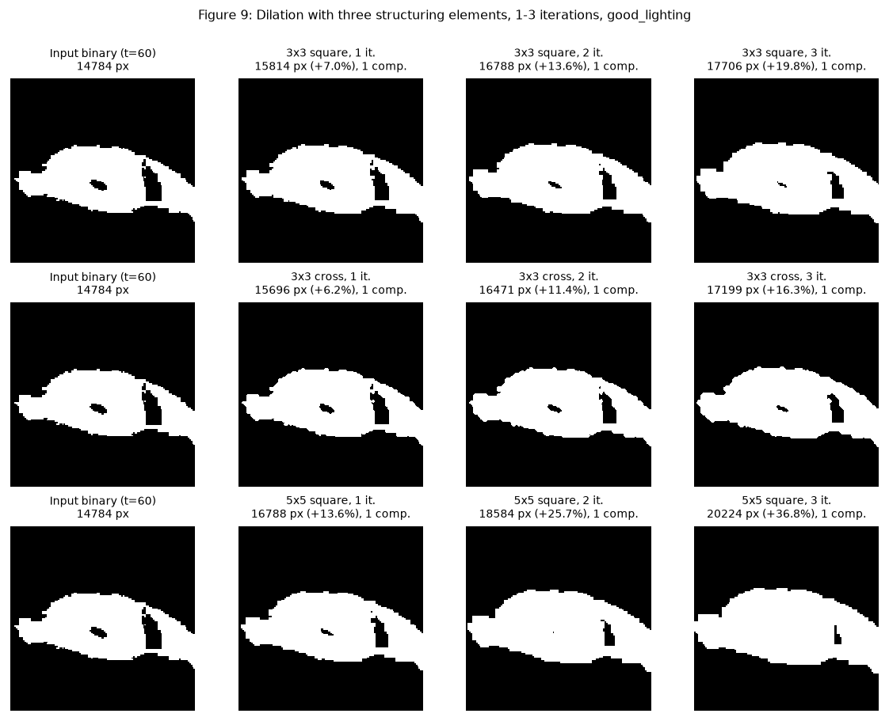 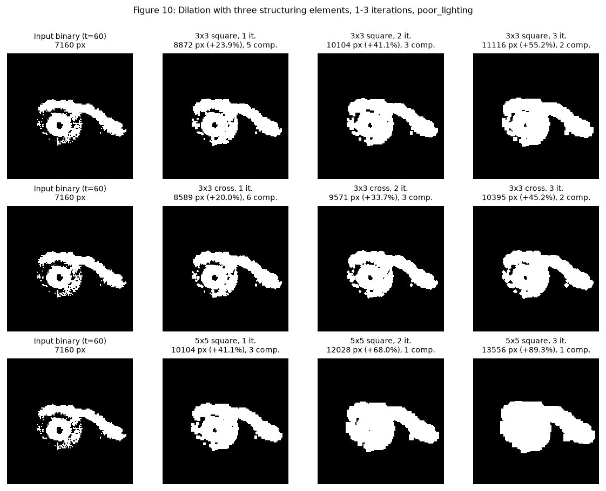 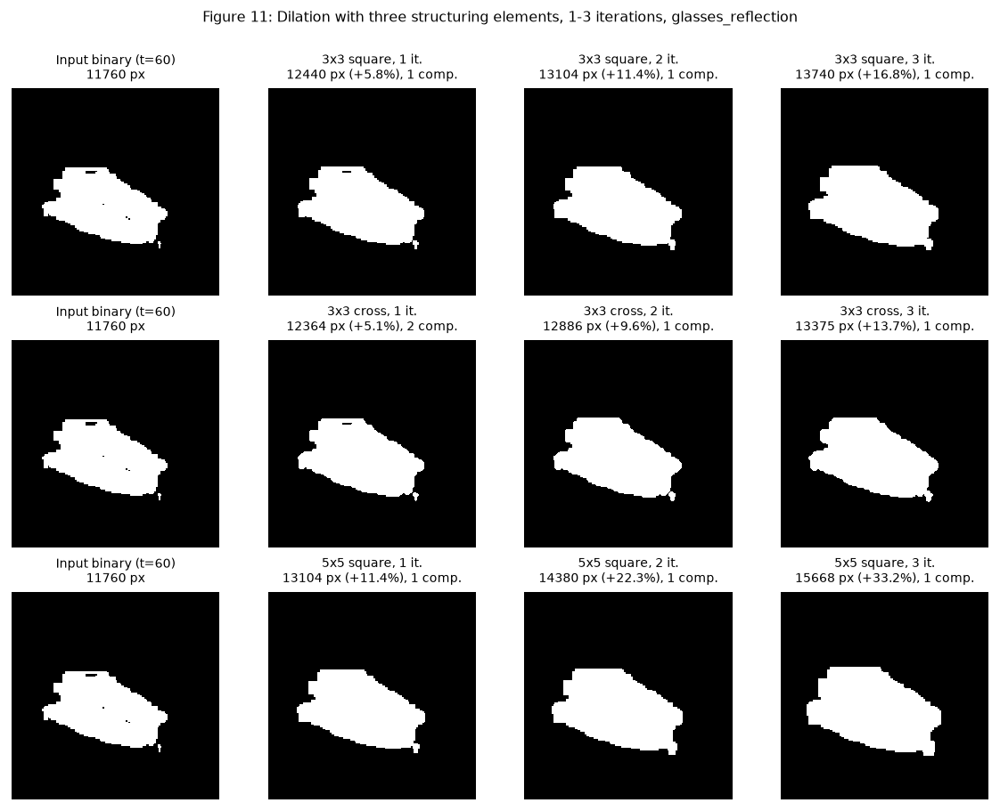 Table 5 – dilation, good_lighting
Table 6 – dilation, poor_lighting
Table 7 – dilation, glasses_reflection
Tables 2–7 (erosion then dilation, per image). Boundary length = foreground pixels with a 4-neighbour background pixel. Component counts use 8-connectivity. “Change vs input” is relative to the input binary’s foreground pixel count. Task 4 – Erosion versus dilation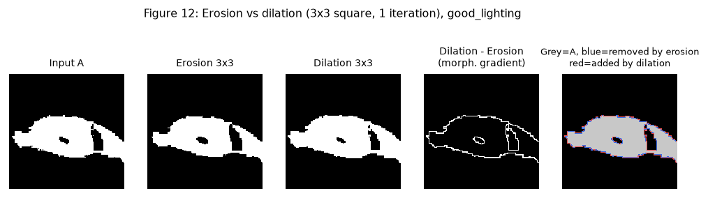 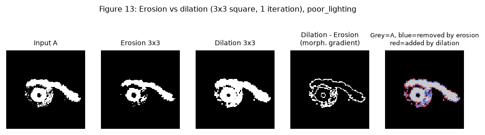 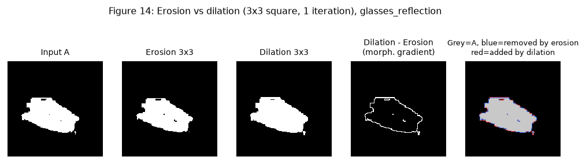 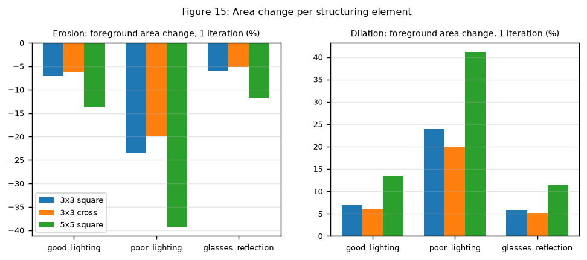 Task 5 – Iterations: vanishing and merging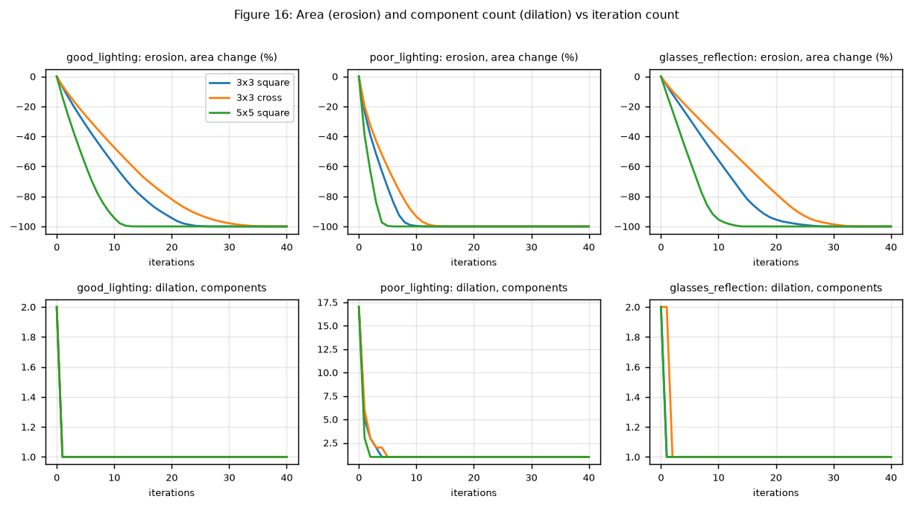
Table 8. Vanishing and merging iterations, measured by iterating until the foreground is empty (erosion) or one component remains (dilation). Thin structures and bridgeable gaps (SE-size probes)
Table 9. Pixels belonging to structures thinner than the SE (removed by opening) and background gaps narrower than the SE (filled by closing). Duality verification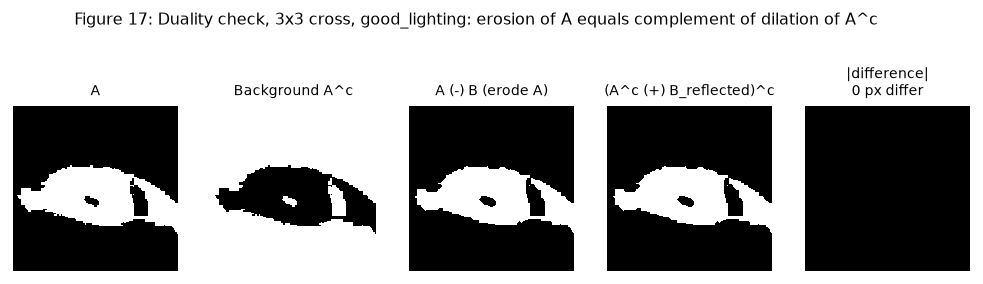
Table 10. Duality check (differing pixels summed over iterations 1, 2, 3) over 27 cases (3 images × 3 SEs × 3 iteration counts). Total differing pixels: erosion–dilation duality 0, dilation–erosion duality 0, OpenCV-vs-set-definition 0 / 0. The duality holds exactly (0 differing pixels in every case), and the independent NumPy fit/hit implementation reproduces OpenCV exactly. Border handling matters here: OpenCV treats out-of-image pixels as foreground for erosion and background for dilation, which is precisely the dual convention. |
| Comparison of Erosion and Dilation |
Both operators use the same SE and are duals, but they act on opposite sets: erosion trims the object, dilation trims the background. The measured one-iteration changes (Figure 15, Tables 2–7) make the symmetry concrete:
The asymmetry between good/glasses (about ±6–7 % per iteration) and poor_lighting (about ±24 %) is a size effect: poor_lighting has a much smaller, more fragmented foreground (7160 px, 1417 boundary pixels) so the boundary layer removed or added is a far larger fraction of it. On the compact good/glasses objects (14 784 and 11 760 px, boundary 962 and 612) the same one-pixel shell is a few percent. A larger SE scales the effect: the 5x5 square changes area about twice as much as the 3x3 square per pass (good -13.7% vs -7.0%), being exactly two 3x3 passes. The cross is the gentlest (good -6.2%, +6.2%) because it does not move diagonal edges. Erosion followed by dilation (opening) does not return the original: the pixels that stay lost are exactly the structures thinner than
the SE (Table 9: up to 952 pixels on poor_lighting with the 5x5 square), and closing bridges gaps by up to 872 pixels. This is why the
pair is used together in |
| Effect of Iterations |
Repeated erosion. Each iteration peels a one-pixel shell (3x3 square), so area falls roughly linearly in iterations for a compact object (Figure 16, top) and the object finally disappears. Measured area change after 1, 2, 3 iterations (3x3 square): good -7.0% / -13.7% / -20.2%; poor -23.6% / -39.3% / -51.7%; glasses -5.9% / -11.8% / -17.3%. With the 5x5 square poor_lighting loses -84.0% after only 3 iterations. Which structures disappear. Structures vanish in order of width. On poor_lighting (3x3 square) 15 of the 17 original components (the speckle, areas 1–52 px) vanish at iteration 1 and one more at iteration 2; only the main eye/eyebrow object survives, and it sheds small pieces itself (8 components after iteration 1: a 5412-px body plus pieces of 4–20 px). By iteration 3 the body has split into 3 pieces (56, 1084 and 2316 px), the eyebrow band separating from the iris ring (Figure 7). On glasses_reflection the isolated 32-px glare dot vanishes at iteration 2 (3x3 square) or 3 (cross), and on good_lighting the 4-px speck vanishes at iteration 1. The last surviving structure is always the widest part of the pupil/iris region, which vanishes entirely at iteration 27 (good), 12 (poor), 29 (glasses) for the 3x3 square, 37 / 16 / 34 for the cross and 14 / 6 / 15 for the 5x5 square (Table 8). Vanishing time is about half the object’s smallest width divided by the SE radius, so the cross (which moves diagonal edges more slowly) lasts longest and the 5x5 square shortest. Erosion can also increase the component count by cutting a thin neck: good_lighting goes 2 → 1 → 1 → 2 (3x3 square) because the speck is removed first and the neck to a lower structure breaks at iteration 3. Repeated dilation. Each iteration adds a one-pixel shell: area grows about +7.0%, +13.6%, +19.8% on good_lighting, but the growth of poor_lighting is far larger (+55.2% after 3 iterations; +89.3% with the 5x5 square) because gaps between fragments are being filled as well as the outline moving outward. The measured component counts fall while the boundary length falls (poor 1417 → 829): the outline becomes smoother. Which regions merge. The first merge happens at iteration 1 with the 3x3 square, 3x3 cross (poor, good) and 5x5 square on every image; on glasses_reflection the cross needs 2 iterations (the 32-px dot lies diagonally off the main object, and the cross does not extend along diagonals). On poor_lighting the 17 components collapse as 5 (iteration 1) → 3 → 2 → 1 for the 3x3 square (single component at iteration 4), 6 → 3 → 2 → 2 → 1 for the cross (iteration 5) and 3 → 1 (iteration 2) for the 5x5 square. The speckle around the iris merges with the iris ring and eyebrow first (after 3 iterations of the 3x3 square only a 64-px fragment remains separate from the 11 052-px main body); the last merge absorbs that residual fragment. Beyond that point further dilation only inflates one merged blob (good_lighting: a single component from iteration 1, area +19.8% at 3 iterations and still growing). Erosion and dilation are not inverses. Eroding then dilating with the same SE (opening) restores the large object’s shape but not deleted fragments; dilating then eroding (closing) keeps merged objects merged. Repeating either operation is therefore a controlled loss of information, which is the price of noise removal or gap bridging. |
| Observations |
|
| Conclusion |
Binary erosion and dilation were implemented in |